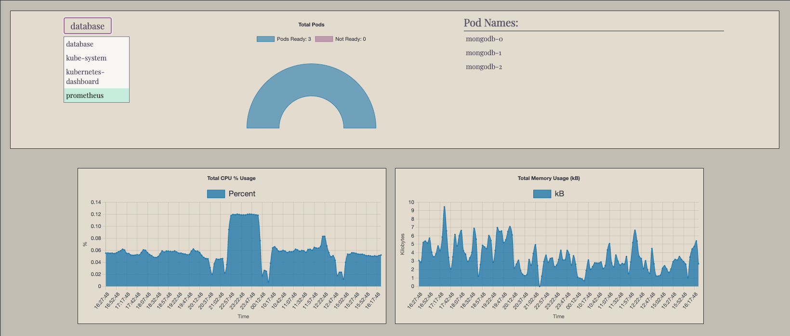
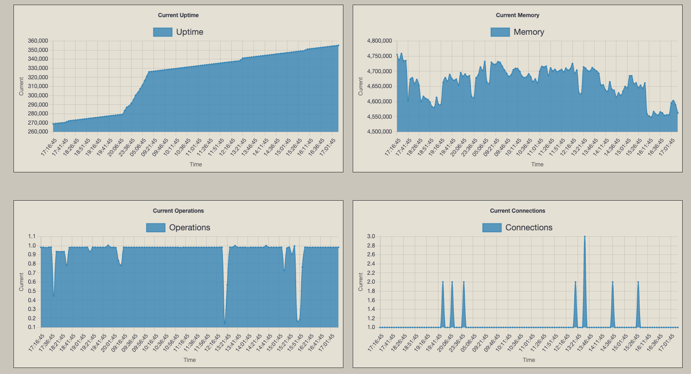

Main Page
You are provided with a general summary of the kubernetes instance that are being displayed in both live updating charts and restrospective charts.

Kubernetes Page
The ability to navigate to different namespaces within your cluster and select specific pods to monitor.

MongoDB Page
An overview of database health metrics for your stateful mongodb application